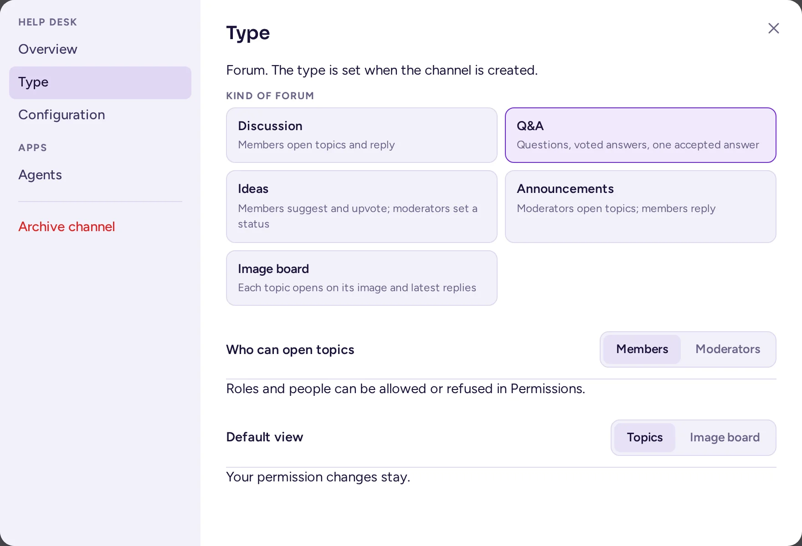

Channels
How to create and organise a community's channels and categories, set what people may do in each channel, and archive or export channels.
Create a channel
- Open the community menu and choose Create channel. You can also open a category's ⋯ menu and choose Create channel to create it in that category.
- Pick the channel's type with the Text, Voice and Forum switch, then one of its preset cards. A card sets the channel's type for good: it can't be changed afterwards, though the cards of that type can (see The Type tab).
Voice is greyed out, with "Needs the Voice channels app", until that app is active on the server; it needs the Calls app too.Type Preset What it is Text Chat Messages, files and threads. Members start conversations. Announcement Moderators post; everyone replies in threads. Voice Talk An always-open call; members drop in and talk. Stage Speakers talk, the audience listens and asks to speak. Forum Discussion Members open topics and reply. Q&A Questions, voted answers, one accepted answer. Ideas Members suggest and upvote; moderators set a status. Announcements Moderators open topics; members reply. Image board Each topic opens on its image and latest replies. - Enter a Name. The channel's address is made from it.
- Choose a Category, either one of the Community categories or one of your own.
- Turn on Private channel if only invited people should see and join it.
- Choose Create channel.
More options… opens a longer form where you can also edit the channel's address and write its purpose.
By default, every member can create both public and private channels. To stop members creating channels, a system admin changes the community's permissions in the System Console (User Management › Permissions). A custom role can grant Create public channels and Create private channels, but can't take them away from members.

Categories for everyone
Categories are the headings that group channels in the channel list. Everyone can make their own categories, which only they see. Community admins can also make categories for everyone: they appear for every member, above their own categories.
Create a category for everyone
- In the community menu, choose Create category.
- Enter its name and turn on For everyone.
- Turn on Locked if only admins should put channels in it. In a locked category, channels stay where you put them for everyone.
A category for everyone stays hidden until it holds a channel. To file a channel in it, drag the channel there, or open the channel's menu and choose Move to…. Community admins can file channels in any category; channel admins can move their channel between open (unlocked) categories only.
In an open category, members can still move a channel to one of their own categories, for themselves only. In a locked category they can't: the channel's menu says the category is locked.
Manage a category for everyone
Open the category's ⋯ menu. Community admins see:
- Permissions…: permissions that every channel in the category inherits (see Channel permissions).
- Rename for everyone…
- Locked: lock or unlock the category.
- Move up and Move down: the order of the categories. Channels inside a category for everyone are listed in alphabetical order.
- Delete for everyone: its channels go back to everyone's own categories.
The community layout presets create categories for everyone for you; see Community layout.
Channel settings
Open a channel's menu (click its name in the header, or right-click it in the channel list) and choose Channel settings. The tabs you see depend on your rights and on the server's setup:
- Overview: the name and address, public or private, the purpose (what the channel is for), the header (a line of text, with links, at the top of the channel), and the channel's attributes. The Default category puts the channel in a category for people when they join it.
- Configuration:
- Channel Banner: a coloured banner with your text, shown at the top of the channel, for example for rules or an event.
- Join/Leave System Messages: show or hide the "joined the channel" and "left the channel" messages in this channel, for everyone. Not offered in a community where members are in every channel: there, nobody joins or leaves a single channel, so these messages, and the community's own join and leave messages, go to its Join and leave messages channel instead.
- Auto-translation, when the server has a translation service.
- Membership Policy and Permissions Policy: rules based on people's attributes. These only appear when a system admin has turned on attribute-based access control.
- Type: the channel's type and preset, and the settings they bundle (see below). Shown to whoever manages the channel's properties.
- Apps: settings added by apps.
- Archive channel, for the people who may archive it (see Archive a channel).
The Type tab
Every channel's settings have a Type tab, for whoever manages the channel's properties. It shows the channel's type (fixed when it was created) and the same preset cards as the create-channel dialog, limited to that type: picking one moves the channel's mode, who starts conversations or opens topics, and, for a forum, its default view, all at once. With settings that don't match any card, no card is selected ("Custom").
Below the cards, two settings can be tuned on their own, apart from any preset:
- Who can start conversations (text and voice) or Who can open topics (forums): Members or Moderators. A note under it points to Permissions… for allowing or refusing this to one role or person (see Channel permissions).
- Forums only, Default view: Topics or Image board, the view the channel opens on; everyone can still switch their own view while they're in it (see The image board view).
Switching preset never touches your permission overrides: they keep applying on top of whatever "who starts conversations" becomes. Save with the tab's own Save button.

Channel permissions
Channel permissions let roles and people do more, or less, in one channel than they can elsewhere. Open the channel's menu and choose Permissions…. Community admins and channel admins see this item.
The dialog has two parts.
Who can see it
A public channel is visible to everyone in the community. For a private channel, you can tick roles: then only people with these roles are in the channel. They are added when they get the role, and removed when they lose it. With no role ticked, the private channel is open to anyone who is invited.
What they can do here
Choose Add a role or Add a person…, then set each line to Denied here, As elsewhere or Allowed here:
| Line | What it covers |
|---|---|
| Send messages | Posting messages. |
| Start conversations (text and voice channels) or Open topics (forums) | Starting a new conversation, as distinct from replying to one. The channel's Type tab sets the baseline (below); this line overrides it for one role or person. |
| Add reactions | Adding and removing reactions. |
| Attach files | Uploading files. |
| Mention @channel, @all and @here | Notifying the whole channel. |
| Mention groups and roles | Notifying a team or a role. |
| Manage messages | Editing and deleting other people's messages, and putting messages on top. |
| Manage members | Adding and removing channel members. |
| Manage the channel | Renaming it and changing its header and purpose. |
How the lines combine:
- A role's Denied here takes the permission away; another role's Allowed here gives it back. Among roles, allowed wins.
- A setting for one person wins over the settings of their roles.
- Community admins are never affected, and permissions never lift a timeout.
- A channel in a category for everyone inherits the category's permissions. The channel's own setting wins, line by line. Inherited lines are marked "from the category", and As the category resets a line.
- A channel admin who is not a community admin can only change lines for permissions they have themselves.
Changes are saved immediately.
Announcement and read-only channels
For a new channel, the native way to let only some people post is to pick the Announcement preset (text) or Announcements preset (forum) when you create it, or switch to it afterwards in the channel's Type tab (see above): moderators post or open topics, everyone else replies, with no System Console step. You can still fine-tune who, with the Type tab's own setting or Permissions… (see Channel permissions).
For a channel made before channel types, or one you'd rather not switch, the old way still works: channel permissions apply to roles and to people, not to "everyone", so a channel where only some people may post needs two steps:
- A system admin turns off Create Posts for members in System Console › User Management › Channels, under the channel's Advanced Access Control. Members then can't post there.
- In the channel's Permissions…, set Send messages to Allowed here for the roles that should post, for example "Staff" or "Moderators".
Community admins can always post. Members who can't post see "You can't send messages in this channel." instead of the message box.
If all your members have a role (for example one given by the onboarding), you can do without a system admin: set Send messages to Denied here for those roles, and Allowed here for the roles that should post. Remember that people without any role are not affected.
Make a channel private
Use the Overview tab of the channel settings. Those who may convert channels without having that tab find Convert to private channel… in the channel's menu instead. By default only community admins can do this, and the default channel can't be made private. Converting a private channel back to public isn't offered in the community's interface; a system admin can do it in System Console › User Management › Channels, with the channel's Public channel or private channel switch.
Requests to join private channels
If a system admin has turned on discoverable channels (a feature that is off by default), a private channel can be marked Discoverable (Users can request to join) on its Overview tab. Non-members then see it in Browse channels and can ask to join, without seeing its messages. Requests appear at the top of the channel's member list, under Pending join requests, with Approve and Deny buttons for channel and community admins.
Archive a channel
Archiving hides a channel from the channel list and stops new messages, but keeps its history: people can still find it in search and read it. Open the channel's menu and choose Archive channel…, then confirm. Community admins can bring it back with Unarchive channel in the archived channel's menu.
Who can archive a channel depends on the kind of community (see Kind of community):
| Kind | Who archives a channel |
|---|---|
| Guild | Community admins, and roles with Manage channels. Members don't, not even the channels they created. |
| Workspace | Community admins, roles with Manage channels, and the channel's admins: whoever created it, and the people they made admins of it. |
An archived channel is read-only: nobody posts, reacts, edits, pins or puts messages on top there, and its name, settings, roles and permissions can't be changed. It still takes new members, for example an auditor who needs to read its history: people who may manage its members find Add members in its menu and in its member list.
- General, Welcome (Off-Topic in older communities) and the community's default channel can be archived too, but only by community admins. See The default channel.
- Channels can't be deleted permanently from the interface. Permanent deletion is turned off on the server by default; ask a system admin if you need it.
Messages put on top
The channel's admins, the community's admins and moderators with Manage messages can put a message on top of a channel where they can post, from the message's menu: Put on top, for 1 hour, 4 hours, 1 day, 1 week, or Until removed. A channel keeps at most 10 messages on top. The same people remove them, with Remove from top. Members don't see these items, in either kind of community; in direct and group messages, everyone in the conversation can. Manage messages set to Allowed here in a channel's permissions lets a role do it in that channel only.
Pinned messages are different: anyone who can read the channel can pin and unpin.
Export a channel
To keep a copy of a channel's messages, open its menu and choose Export channel…. Choose the messages (All time, Last 30 days or Custom dates) and choose Export: you get a CSV file, which spreadsheets can open. It holds up to 50,000 messages, with their authors, times and replies. Attachments are listed by name, without the files themselves. Deleted messages and edit history are not included.
By default anyone who can read a channel can export it. A system admin can restrict this to channel, community and system admins with Restrict channel export to admins in the System Console.
Channel members
When everyone in the community is in every channel (see Everyone in every channel), there is nothing to manage: people mute the channels they don't follow, and nobody can be removed from a channel.
Otherwise, to remove someone from a channel, right-click their name and choose Remove from channel, or type /kick @username in the channel. Only the channel's admins, the community's admins and moderators can (a moderator only removes people below their own highest role); anyone can leave a channel themselves. Nobody can be removed from the community's default channel.